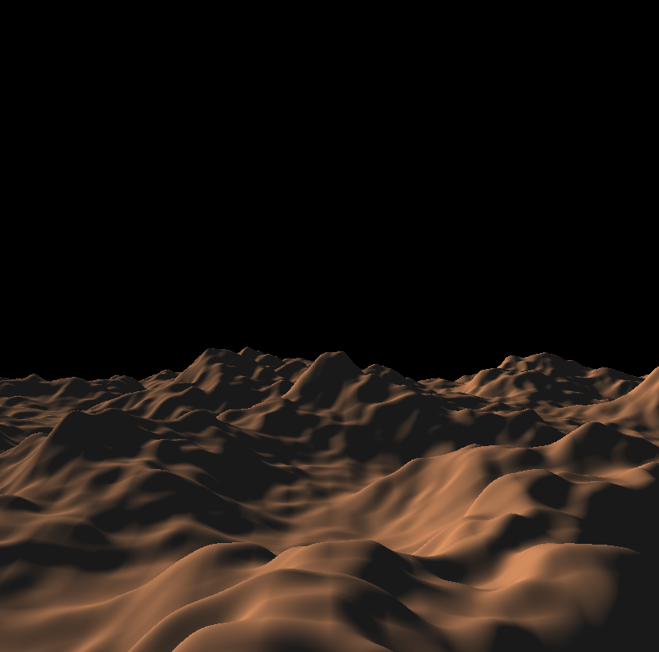
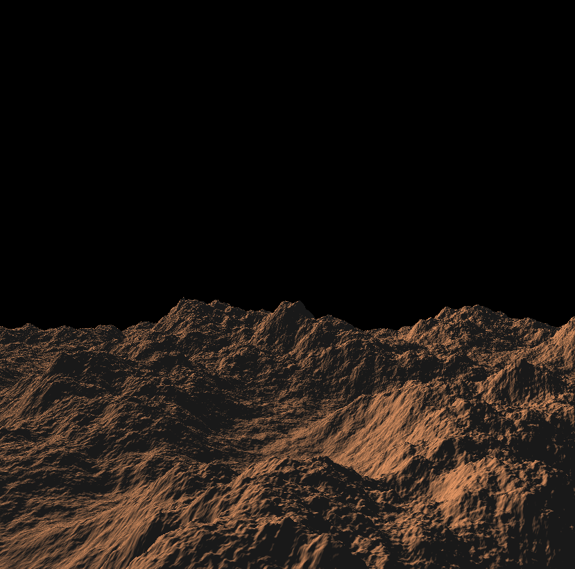
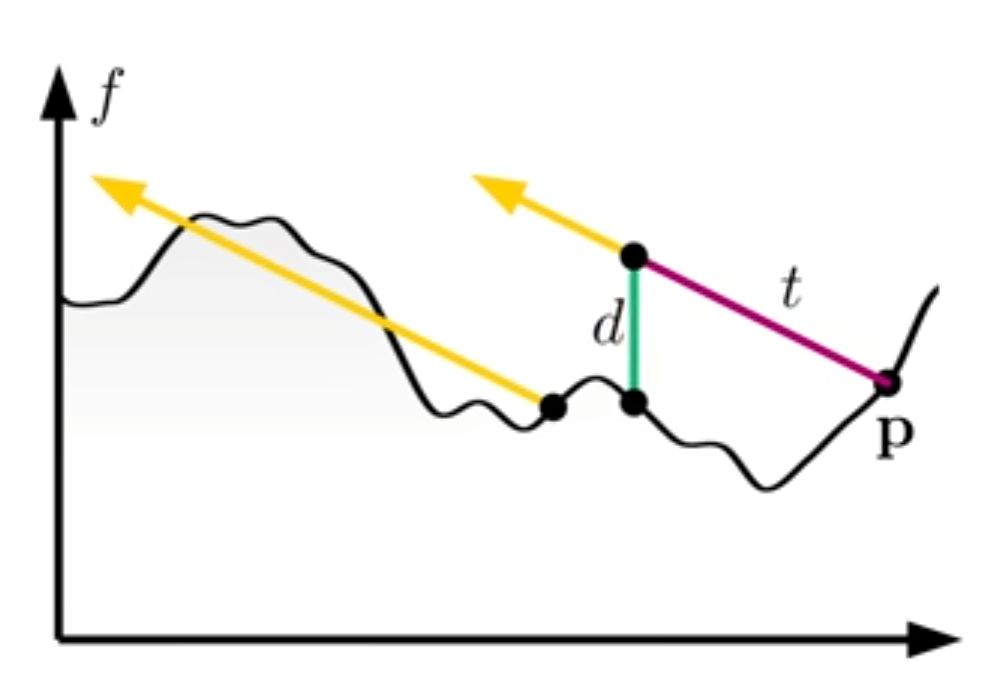
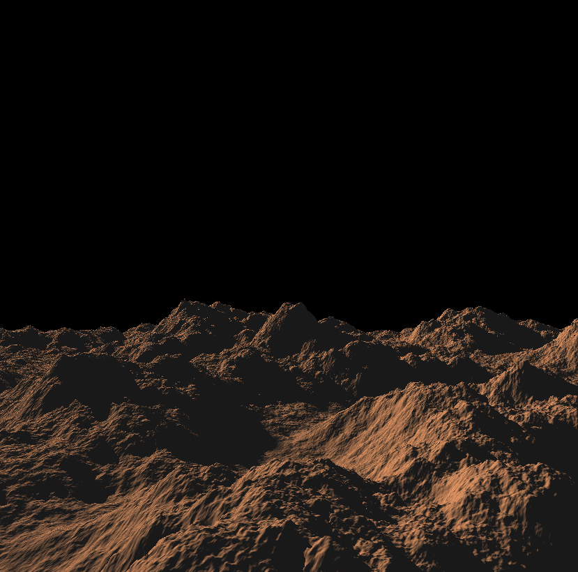

程序化地形生成-1
ShaderToy是一个很有趣的网站，它上面有着非常多的渲染案例分享，最近一段时间我也是沉迷了。在看了不少大佬的作品之后，不禁手痒。前一段时间看了Inigo大佬的一个教程案例，想着把这个效果自己来实现一次，因此就有了今天的这篇文章。
我最终的成品也放到了shadertoy上面，有兴趣的同学可以一起讨论参考一下。看起来还不错对吧，虽然还有不少地方需要完善，但这个demo已经实现了我心中的大部分效果，包括无限的基于噪音的地形生成、地形阴影、雾气、云等等。
那么下面，就让我来一步步说明这个demo的实现过程吧。
基础知识
在ST上渲染地形
对ShaderToy上运行的Shader代码，对应着可编程渲染管线的片段着色器(或者叫像素着色器)。片段着色器主要是是图形光栅化后的像素信息，所以渲染3D场景需要进行一些额外的步骤。
ShaderToy的程序一般是这样的：
1 | void mainImage(out vec4 fragColor, in vec2 fragCoord) |
fragColor是输出，代表这这个像素的最终颜色；fragCoord是输入，代表这个像素点的xy坐标。ShaderToy提供了固定变量iResolution用来表示整个屏幕的xy的分辨率。
为了渲染3D物体，我们需要采用ray cast/marching的方法，构建一个相机的位置作为光线射出的起点ro，再根据当前像素点的坐标和ro的差获得光线射出的方向rd。
1 | void mainImage(out vec4 fragColor, in vec2 fragCoord) |
和地形相交
在shadertoy中渲染3D物体，一般是使用raymarching方法配合SDFs来渲染3D的物体。SDF（Signed Distance Field）是一种物体的隐式表达，用于存储和计算点到图形表面的最近距离。经由一个起点和一个方向，可以用SDF来达到低消耗的射线检测效果。
这里可以参考Inigo对SDF的介绍的介绍：https://iquilezles.org/articles/distfunctions/
地形的渲染也是类似的，我们通过ray marching方法来找到距离地形最近的点，以此来获取地形的形状。但是和SDF不同的是，我们无法很轻易的判断射线当前距离地形的最近距离，尤其是当我们的地形完全是通过噪音来随机生成的时候，这变成了一个不可能完成的任务。所以在判断地形相交的时候，只能回归到笨办法，一步一步慢慢的往前“挪”，若当前的顶点在地形之下，而之前的一个迭代在地形之上的话，那我们就找到了击中地表的区间段。

1 | bool rayMarch(vec3 ro, vec3 rd, out float hit_t) |
这个方法简单易懂，但显而易见在性能上并不是最优的，尤其是涉及到范围很大的地形的时候，dt的值如果取得太小，那么渲染完成一个场景的时间将会非常的长，消耗巨大；而若是dt的值取得太大，则很有可能会出现取值错误的情况。
当场景距离我们足够远的时候，由于透视的原因，近大远小，远处的场景精度对于观察者来说是越来越不重要了，因此dt的值可以随着光线步近而逐渐组建增大，动态变化。在合适的dt取值和变化曲线下，能够满足精度和性能的要求。Inigo给出的方法是类似这样的：
1 | //其他和上方代码一致 |
t的起始值和dt的增长倍数可以自己尝试选择一个合适的值。
另外，如果我们能对最终渲染的效果有所了解的话，可以通过过滤掉很多不需要做射线检测的情况来极大的提升性能。如果我们最终的效果是一个在空中的相机，天空和地面占据画面各一半的话，那么上半部分的画面（通过rd.y>0判断）是可以完全跳过射线检测的。或者通过增加min_t的值来减少前期昂贵且不必要的性能消耗。
在相交点的取值上，也可以进一步优化。原来仅仅是取两次光线步近的平均值，我们可以额外获取两次步近时位置的地形高度，用高度变化的连线和光线步近的线段做相交的判定取交点。这样得到的值将会更加精确。
1 | //其他和上方代码一致 |
至此，我们就可以在ShaderToy渲染出地形了。
地形生成
生成的基础：噪音
当我们提到噪音，往往会很生活化的把噪音和声音连接起来，从声学的角度来说是正确的。噪音其实可以用来表示所有通过振幅（amplitude）和频率（frequency）描述的波动，它可以是声音，它可以是辐射，也可以是其他的任意一种波动。
在数学课上，我们学过正弦、余弦等三角函数，sin和cos其实就是一种噪音的表现方式。
1 | float amplitude = 1.0; |
就像上面的代码所示，通过改变amplitude和frequency，我们可以改变sin波形的状态。
噪音在很多程序化生成算法中都有着举足轻重的地位。
分形布朗运动
噪音是一种波，它是可以相互叠加的。两个相同的sin波形叠加会形成振幅更加强大的sin波形，而频率相差π/2的两个sin波形叠加后会相互抵消。
在地形随机生成中，为了最终的结果噪音有着更好的随机性和更好的细节，将会循环多次计算噪音，循环的次数为我们称之为octave。每次循环的同一个噪音以一定倍数（lacunarity）升高频率，同时以一定比例（gain）降低振幅，最终将每个噪音计算的结果叠加得到一个最终的噪音，这个噪音的生成技术叫做“分形布朗运动”（fractal brownian motion，fbm）。
下面是分形布朗运动的一个简单的代码演示：
1 | float fbm(vec2 uv, float frequency, float amplitude, int octave) |
其中noiseInterpolate可以是perlin noise或者是simplex noise等任意一种噪音算法。
demo中的地形生成和云层的生成，也使用了该技术。关于FBM除了上面简单的使用还有很多其他的变种，这里我们就不扩展了，后面有机会的话可以专门介绍一下。
地形的基础表现
这里我将地形部分拆解出来。demo的地形计算使用了perlin noise，octave数量达到了11。更多的octave数量会给地形带来更多的细节，但是一般来说后面的效果收益会越来越少。下方是octave数量分布为5和11下的地形的形状对比。


除了每次叠加噪音会进行频率和振幅的变化，为了获得更好的随机性，以及进一步减少噪音可能出现的重复pattern，可以将噪音进行旋转（也就是将传入的uv或者是坐标乘以一个默认的旋转矩阵）后再叠加到原来的噪音上。
我们也需要地形的法线来和光源结合，渲染出地形的明暗部分。获得法线的方法有很多种，可以采样当前计算的地形上点的x轴和z轴（这里假定y轴为up）方向不远的一两个点，和目标点相减得到切线和副切线方向，通过叉乘得到目标点的法线。亦或是采样其他点后通过中心差分法求得目标点的法线。
阴影
仅仅通过法线来渲染地形的明部和暗部是不够的，我们还需要计算地形投射在地表上的阴影。地形的阴影计算原理非常简单，就是将地形上渲染的目标点，沿着光源方向进行射线检测，如果和地形相交的话，那该点就是处于阴影之下。理想情况下，射线检测的距离当然是实际上光源和地形上的点的距离，但是往往由于性能的原因，我们需要缩短这个距离。实际的检测距离可以结合当前点的高度以及地形可能的最高位置进行计算。
在判断当前点处于阴影的时候，计算最终颜色的时候需要再乘以一个阴影的系数。
为了提升效果，我们通常不希望阴影的边缘非常生硬，而是希望有一种柔软的过度，这种更加符合现实的表现。实现这种软阴影的方法可能有很多种，这里采用的是Inigo教程的一种方法。
上面提到判定阴影是通过从地形上面的点向光源方向做射线检测得到的，如果和地形相交则该点处于阴影当中，若不相交，则需要再取一个值，这值是地形向着光源方向移动距离t长度的位置，它和地形高度的差值d和距离t的比值的最小值，乘以某个常数X（10~32等等，可以自己尝试合适的范围）后经过smoothstep限制在（0,1）范围内。这个值作为阴影系数放入光照计算后就可以得到不错的软阴影效果。

通过下面的对比图我们可以看到，在加入了软阴影计算后，地形阴影的边缘有了一种较为平滑的过度，显得没那么生硬了。想要更改软阴影的表现的话可以通过修改常数X。

结语
好了，我们已经得到了一个基础的程序化生成地形的效果了，但是它看起来还是有些单调。地形的深度表现、天空、云彩等等应该如何表现呢？
无需着急，我们将会在后面的文章中对它进行进一步的优化。
参考资料
https://thebookofshaders.com/13/?lan=ch
https://iquilezles.org/articles/morenoise
https://youtu.be/BFld4EBO2RE?si=HWQMSNx5TBsOG_6g